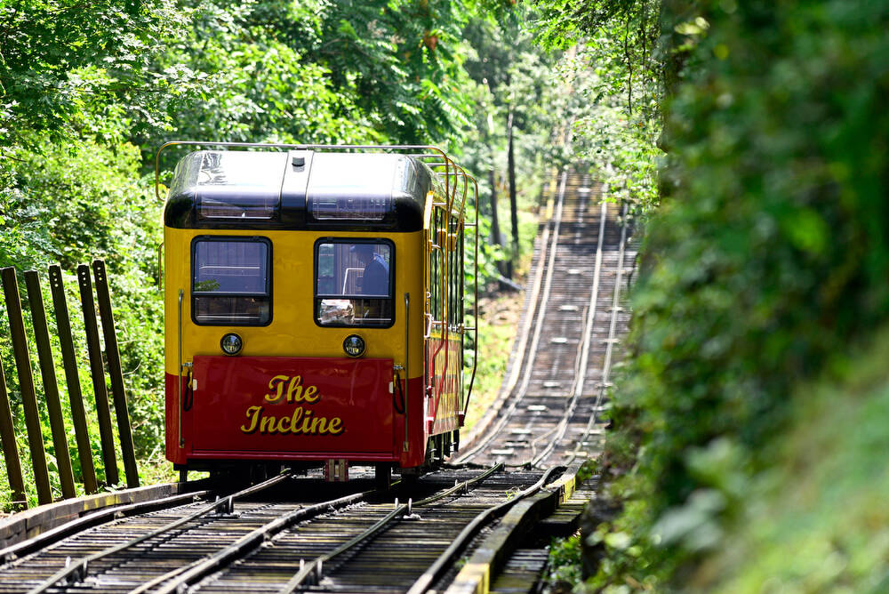
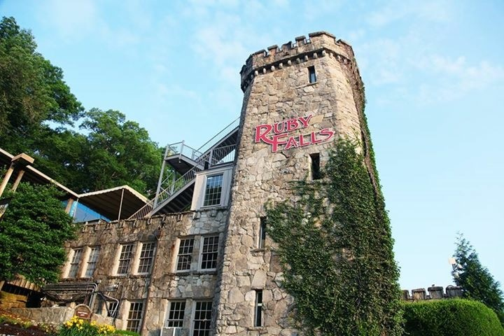
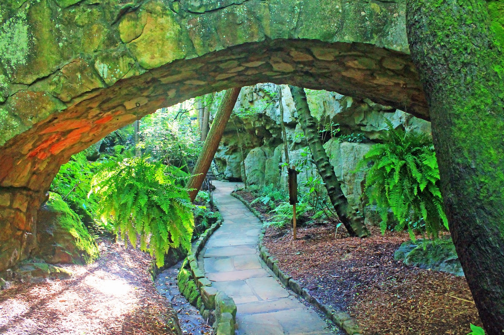
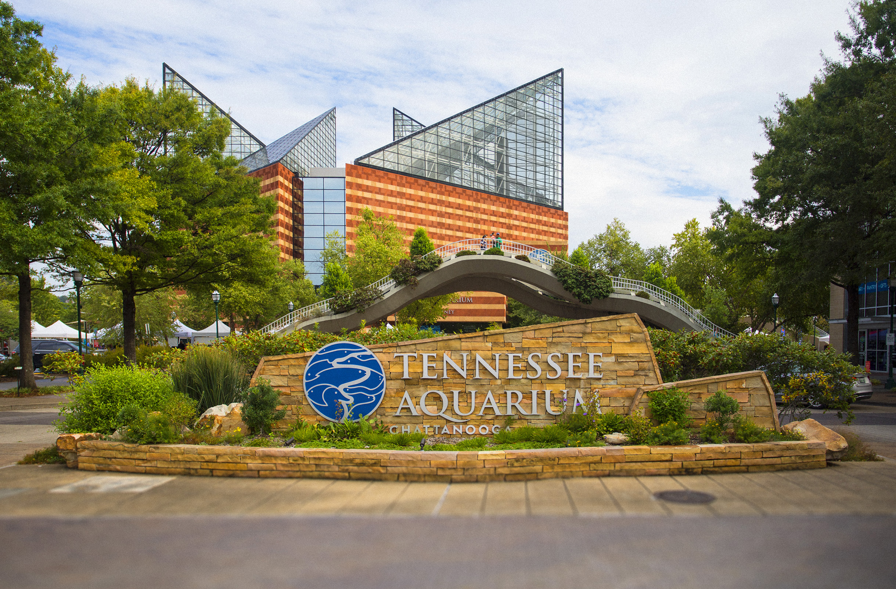

Incline Railway
The Lookout Mountain Incline Railway is a popular tourist attraction with a long history in Chattanooga. Hop inside on of the train cars for a 1 mile ride to the top of Lookout Mountain. The railway has a grade of 72.7% making it the world steepest train ride. The first Incline Railway opened in 1886 and closed in 1895 before being taken down in 1900. The second Incline Railway opened in 1895 and its popularity was the reason that the first Incline Railway was closed. When the Incline Railway opened it was used as a main mode of transportation to the top of the mountain. Originally the cars were powered by coal-burning steam engines before being converted over to electric cars in 1911. The cable that pulls the cars up the track are the same cables used in the Brooklyn Bridge. The Incline Railway is now one of Chattanooga's main tourist attractions serving over 100,000 visitors annually.
Read moreRuby Falls
Ruby Falls is a set of underground waterfalls, some more than 145 high, located more than 1,100ft underground inside of Chattanooga's Lookout Mountain. Ruby Falls was discovered on accident by a man named Leo Lambert. He was a chemist and had an interest in caves. He bought land on top of lookout mountain and began drilling straight down in search of another known cave system called Lookout Mountain Cave. After drilling 1,120 feet he discovered an crack in the rocks about 18inches in diameter. Driven by curiosity, Lambert and his team crawled through this space for 17 hours until they reached the waterfall that is now called Ruby Falls.
Read moreRock City Gardens
Rock City is a tourist attraction on Lookout Mountain which features a long maze of trails and tunnels leading through unique rock formations and above a 140ft waterfall. As you walk through the gardens and trails you'll notice over 400 labeled native plant species. You will also see decorations of gnomes and small gnome towns on display inside of small caverns and caves. At one point the trail leads you above a 140ft waterfall where you can see the mountains of seven different states.
Read moreTennessee Aquarium
The Tennessee Aquarium features is home to over 800 species of animal with more than 12,000 animals. With over 400,000 gallons of fresh water it was the largest fresh water aquariums in the world when it opened in May 1992. As you begin your tour through the aquarium you start with fresh water exhibits in the River Journey building. The tour continues through the Ocean Journey building where you experience all the salt water aquariums. Along the way, you'll come face-to-face with feisty otters, enormous catfish, and tons of turtles. You'll have an opportunity to touch sturgeon and stingray. Enjoy playful penguins, and marvel at all the sharks sharks, lemurs, and butterflies.
Read more